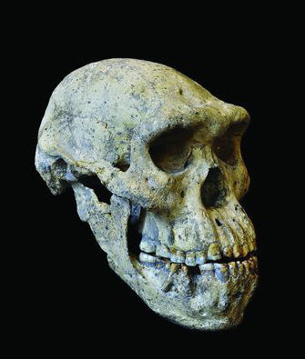

| Feature Article - November 2013 |
| by Do-While Jones |
A new fossil skull presents more problems for evolutionists.
 |
|---|
Late last month, a description of a skull found in the state of Georgia (the one that was formerly part of the Union of Soviet Socialist Republics, not the one that was formerly part of the Confederate States of America) caused such a stir in the scientific community that the controversy was widely reported in the general news media. Science News Daily listed these 26 headlines of stories appearing in a variety of publications:
|
Here's an excerpt from a typical example of how the discovery was reported:
|
(CNN) -- Fragments of humans' ancient relatives are scattered across the globe. Sometimes a tooth or a few bones are all we have to tell us about an entire species closely related to humans that lived thousands or millions of years ago. So when anyone finds a complete skull of a possible human ancestor, paleoanthropologists rejoice. But with new knowledge comes new controversy over a fossil's place in our species' very fuzzy family tree. ... What's more, the researchers suggest that the fossil record of what have been considered different Homo species from this time period -- such as Homo ergaster, Homo rudolfensis and Homo habilis -- could actually be variations on a single species, Homo erectus. That defies the current understanding of how early human relatives should be classified. 2 |
This CNN report began with the honest admission that some species are known only from a tooth or a few broken bones. This is why the alleged human family tree is "very fuzzy." The evolutionary fairy tale about how humans evolved isn't as clear as American public school students are typically led to believe. It is encouraging that the news media did not try to sweep this discovery under the rug. For once, magazine sales trumped their political agenda.
In January of 2000, we began a three-part series on human evolution. First, we showed you several different human family trees proposed by evolutionists. 3 Now, nearly 14 years later, there is still no consensus. In March of 2000, we showed you just how fragmentary the Homo habilis fossils are. 4 Although the joke about "Tim 'the Tool Man' Taylor" (a character on the popular TV show Home Improvement which was on the air at the time) is certainly out-dated, our comments on the fossils themselves are not, as the current controversy about Skull 5 proves.
But rather than rehash the popular reports about the discovery of Skull 5, we will, as our custom is, tell you what the actual peer-reviewed literature said. Since it is full of obscure technical terms, we have inserted definitions of terms and comments in square brackets to make it more understandable. (You have our permission to skip down to Our Summary if the quotes are too hard to follow.)
|
Excavations at Dmanisi, Georgia, have yielded hominid fossils ... of at least five hominid individuals ... crucial in understanding patterns of variation, biogeography, and evolution within emergent Homo [human, or extinct human-like creatures] 5 |
Previous to this report, four partial skulls were recovered from the Dmanisi excavations and had been documented in the technical literature 13 years ago. This new skull, Skull 5, is complete and undistorted.
|
Skull 5 is the first complete specimen to provide evidence of how the face (including the mandible [jaw]) of adult early Homo was oriented and positioned relative to the braincase. Contrasting with the small braincase, the face of skull 5 is among the largest and most prognathic [having a protruding jaw] known from early Homo. 6 |
Previous artists' conceptions based on reconstructions from broken, partial skulls have tended to give the alleged human ancestors weak, ape-like chins. Skull 5 looks more like Jay Leno. (That joke won't mean much 14 years from now.)
Evolutionists use brain size as a measure of intelligence, and therefore, the degree of evolution. Since intelligence can be determined by brain size, why bother to administer IQ tests? Why not simply measure the size of students' heads?
|
The ECV [endocranial volume, that is, brain size] of skull 5 (546 cm3) represents the smallest of the Dmanisi sample (skulls 1 to 4: 601 to 730 cm3), and it is at the lower end of variation of the H. habilis hypodigm [all the known fossil Homo habilis skulls] (509 to 687 cm3). Stature and body mass estimates obtained from the postcranial elements [bones below the skull] that are probably associated with skull 5 (146 to 166 cm, 47 to 50 kg) place this individual within the range of variation estimated for early Homo and at the lower end of variation of African H. erectus and modern humans. The skull 5 individual thus provides the first evidence that early Homo comprised adult individuals with small brains but body mass, stature, and limb proportions reaching the lower range limit of modern human variation. [So, skull 5 could have come from a small modern human with a small head. Did they really mean to admit that?] Combining ECV and body mass data, the encephalization quotient (EQ) of the skull 5 individual is estimated as ~2.4, which is within the range of variation for Australopithecus [Australopithecus means "southern ape." Australopithecus is believed by some to be the ape-like ancestor of Homo.] The larger ECV of early Homo as compared to Australopithecus africanus (340 to 515 cm3) and Au. sediba (420 cm3) might thus primarily reflect an evolutionary increase in body size rather than increased encephalization [brain size]. As already noted by Darwin, recognizing species diversity comes "at the expense of admitting much variation" within species. Together with data from Au. afarensis paleodemes [extinct populations] such as [the fossils called "the first family" 7 technically designated] A.L. 333, [the discovery at] Dmanisi adds to the growing evidence that intrademic and intraspecific variation [variations in populations and variations in species] in Plio-Pleistocene [less than 5 million year-old] fossil hominids tends to be misinterpreted as species diversity, especially when single fossil specimens from different localities are compared with each other. Evidence from skull 5 and the other four Dmanisi specimens indicates that cranial shape variation within early Homo paleodemes [extinct hominid populations] was similar in mode and range to that seen within modern Pan demes [chimpanzee populations]. Furthermore, Dmanisi indicates that an important proportion of character state variation in nonmetric features reflects intrademic variation [variation within a single population] rather than real species diversity [that is, these discoveries reflect variations between individuals in different populations of a single species rather than evidence of different species]. These findings have several implications for the interpretation of morphological diversity [differences in shape] in the fossil record of early Homo. When seen from the Dmanisi perspective, morphological diversity [differences in shapes] in the African fossil Homo record around 1.8 Ma [1.8 million years ago] probably reflects variation between demes [populations] of a single evolving lineage, which is appropriately named H. erectus. The hypothesis of multiple independent lineages (paleospecies) appears less parsimonious [less simple, and therefore less likely], especially in the absence of empirical evidence for adaptation to separate ecological niches. The hypothesis of phyletic evolution within a single but polymorphic lineage raises a classificatory but not evolutionary dilemma [it upsets the currently accepted classification of hominid fossils, but it doesn't disprove evolution (they say)], and it is premature to describe the rate(s) of evolution in this lineage, given the small available samples. [Yes, their vast conclusions are based on half-vast samples.] Specimens previously attributed to H. ergaster are thus sensibly classified as a chronosubspecies, H. erectus ergaster. The Dmanisi population probably originated from an Early Pleistocene expansion of the H. erectus lineage from Africa, so it is sensibly placed within H. e. ergaster and formally designated as H. e. e. georgicus to denote the geographic location of this deme [population] (thus retracting the species status given earlier to mandible [jaw] D2600). Given the scattered and fragmentary fossil record in Africa that predates Dmanisi, questions of earliest African Homo phylogenetics [evolutionary tree] and classification remain unresolved. It remains to be tested whether all of the fossils currently allocated to the taxa H. habilis and H. rudolfensis belong to a single evolving Homo lineage. Although we regard this null hypothesis as parsimonious [simple, and therefore likely] and fully compatible with new evidence from Dmanisi, alternative scenarios exist. Given the range of variation seen in the Dmanisi paleodeme, there is no convincing signature, at present, of early Homo cladogenesis [there is no way to tell what evolved from what]. The African fossils that postdate the Dmanisi ensemble show brain size increase and correlated change in craniofacial morphology within the evolving lineage of H. erectus. Moreover, it is likely that both the underpinning of the East Asian dispersal of H. erectus, as well as the roots of subsequent H. erectus evolution in Africa (for example, [the fossil designated] OH 9, Daka), shared greater craniofacial robusticity. 8 |
Here's what they tried to say: There are very few fossils of alleged human ancestors, and except for "Lucy" 9 and "Turkana Boy", they are just isolated teeth or bones, not complete skeletons. Since there are so few fossils, it is hard to tell if they represent a single species or different species.
Darwin's recognition that species diversity comes "at the expense of admitting much variation" within species shows that he recognized this dilemma: It is hard to tell if all the fossils came from one species that varies a lot, or lots of different species that were slightly different from each other.
Traditionally, paleontologists tend to say newly discovered fossils came from different species. Their judgment has not been affected in the least by the fact that the discovery of the second fossil of an existing species does not result in as much fame and fortune as discovering the first fossil in a previously unknown species.
The fact that five skulls found in such close proximity in Georgia (in Asia) strongly suggests that all five were from the same species. The differences between them are greater than the differences between them and the other alleged species discovered in Africa; so, one might reasonably conclude that the African fossils are actually the same species as the Asian fossils.
So, the authors suggest the fossils previously named Homo ergaster, Homo habilis, and Homo rudolfensis were incorrectly considered to be distinct species. They were all actually Homo erectus (in their opinion). They should have been classified as the subspecies Homo erectus ergaster, Homo erectus habilis, and Homo erectus rudolfensis (in their opinion).
As we mentioned earlier, conclusions cannot possibly be influenced in the least by the possible fame resulting from making a major revision to the human evolutionary tree. Furthermore, we would never suggest that political correctness could possibly influence scientific consensus. But, we might be wrong about that, so let's try a thought experiment.
Try to visualize three people. The first is a world champion sumo wrestler. The second is a jockey who has won the Kentucky Derby. The third plays basketball in the NBA. Imagine these three people standing side by side. Can you see them in your mind? Can you tell which is which? Of course you can. (But you might not admit it if you are afraid of being bullied by people who insist on political correctness.) These three individuals would certainly differ greatly in physical characteristics (height, weight, and body mass index), even though they belong to the same species.
Now, if you dare, tell what you imagined about their complexions. In other words, did you imagine them all to be of the same race? (This is where political correctness might trump truth.)
Now imagine we ask Charles Darwin which of the three is the least highly evolved. We know from his book, Descent of Man, that he would consider the "savage" basketball player (to use his term) to be the least highly evolved (because of his complexion and continent of origin).
Here's the point of the thought experiment: A scientist's attitude about race (which is dependent upon time, geography, and society) would affect his opinion about whether these three diverse individuals are members of the same race (or maybe even the same species).
The decision would be even more difficult if, instead of comparing three living individuals, one had only a part of the skull of the sumo wrestler, a part of a rib from the jockey, and a tooth from the basketball player. If all three body parts had been fossilized and found in close proximity, could one confidently tell if they were from the same individual or species? If the three fossils were found far from each other, could one tell if they were from the same species or not?
Evolutionists have claimed in the past to be able to accurately draw correct conclusions based on fragmentary fossils. They reconstructed "Nebraska Man" from a single tooth. 10 They might still believe Nebraska Man existed, if they had not found that the tooth fit perfectly in a fossilized pig jaw they found nearby.
The publication of Skull 5 and associated fossils highlights the subjective nature of the analysis of fossils believed by some to have come from "ape men." Evolutionists in Darwin's day believed that black people were a less evolved subspecies of humans. Now most don't (or don't admit it if they do). Scientific interpretation is based on prevailing opinion--not experimental proof. That means it isn't really scientific at all--it is philosophical.
Will Homo ergaster be thrown onto the same evolutionary trash heap as Nebraska Man? That all depends upon who is the best debater, and what will maximize the number of research dollars available to paleontologists. (And some people say I'm not skeptical enough! )
We will never know for sure how many different species the existing fossils represent. Even if we knew they were different species, there would be no way to prove that there is (or is not) a genealogical connection between them. Even if one can prove that one fossil is a different species and significantly older than another, it does not prove that the younger evolved from the older. That is to say, if one found the fossil remains of Paul Revere's horse, which we know must have died before 1800, it would not prove that Richard Dawkins is a direct descendant of that horse, even though Dawkins is of a different species and was born in 1941.
| Quick links to | |
|---|---|
| Science Against Evolution Home Page |
Back issues of Disclosure (our newsletter) |
| Web Site of the Month |
Topical Index |
Footnotes:
1
http://www.sciencenewsdaily.org/archaeology-fossils-news/cluster450185412/
2
CNN, October 19, 2013, "Rare skull sparks human evolution controversy", http://www.cnn.com/2013/10/17/world/europe/ancient-skull-human-evolution/index.html
3
Disclosure, January 2000, "Human Evolution"
4
Disclosure, March 2000, "Homo 'the Tool Man' Habilis"
5
Lordkipanidze, et al., Science. 18 October 2013, "A Complete Skull from Dmanisi, Georgia, and the Evolutionary Biology of Early Homo", pp. 326-331, https://www.science.org/doi/10.1126/science.1238484
6
ibid.
7
http://en.wikipedia.org/wiki/AL_333
8
ibid.
9
Disclosure, February 2000, "Let's Talk About Lucy",
10
Disclosure, March 2000, "Homo 'the Tool Man' Habilis" #nebraska